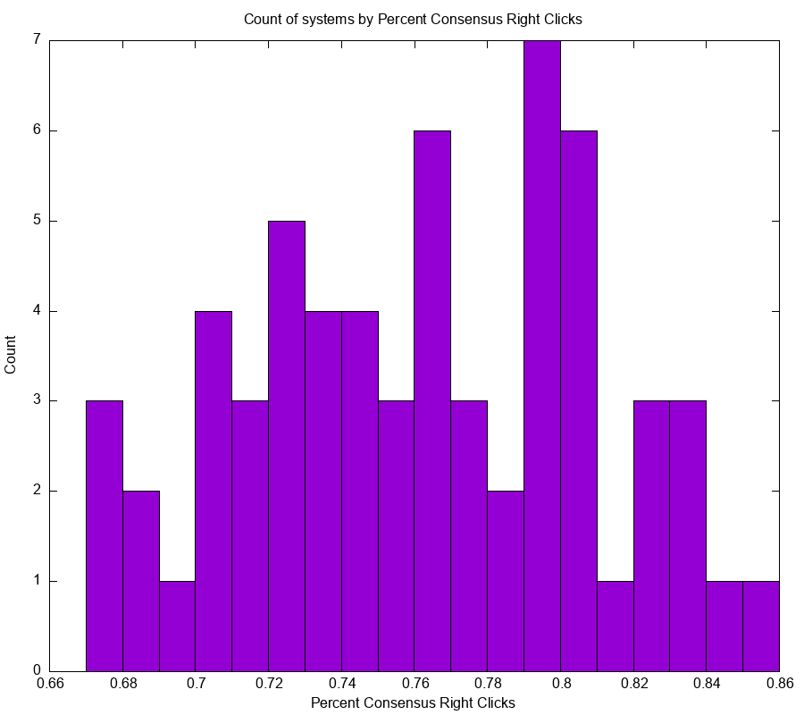
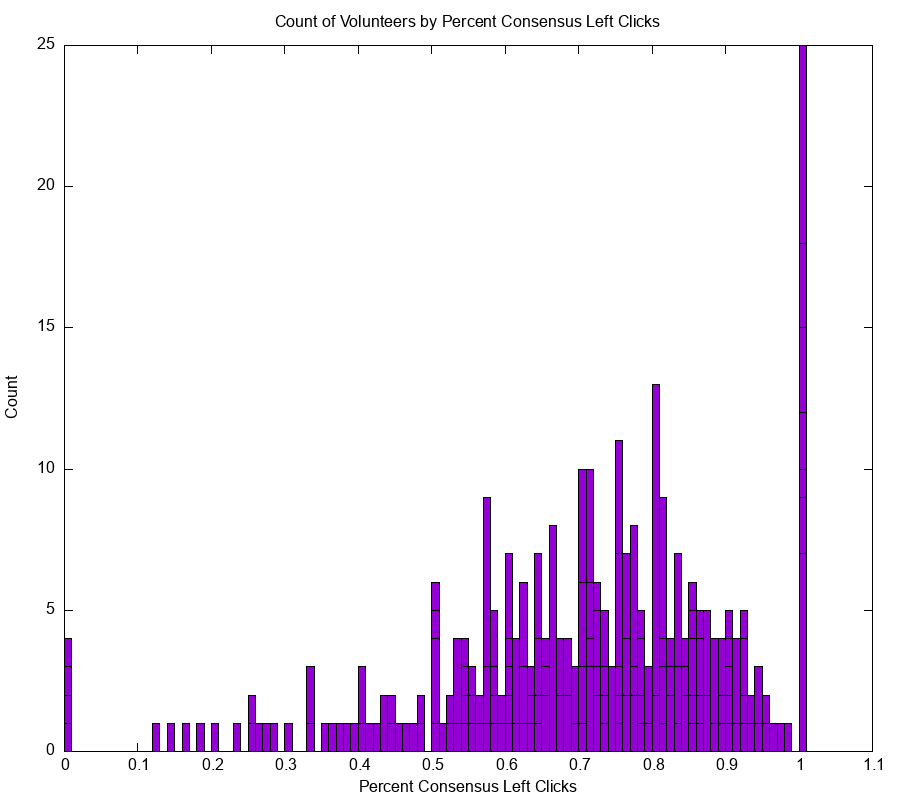

Over 6000 citizen scientist volunteers contributed a total of more than 1 million Merger Wars comparisons to help sort the top simulations. The volunteers clicked the left image about 25.06% of the time and the right image about 24.01% of the time. The neither button was clicked 50.93% of the time. The left button click matched the consensus in 74.53% of competitions. The right button click matched consensus 75.03% of competitions. The neither button click matched consensus 93.7% of the time.
Consensus for left and right clicks is defined by the volunteers selection matching the final Merger Wars fitness score. The fitness score is the ratio of the number of wins to the number of competitions. A "consensus" match occurs when the left image was clicked and the final fitness score for the left image is greater than the score for the right image.
Consensus for the neither button is defined by both images having a low fitness less than 0.5. If both images have low fitness then the neither button matches the consensus. If either or both image have a fitness greater than or above 0.5, the volunteer's selection of neither would not match consensus.
Below is a histogram showing the number of comparisons for each system.
Below is a histogram showing the number of comparisons for each volunteer.
There are a number of users who performed more than 1000 clicks. One user exceeded 9000 clicks. The same plot for log10 number of clicks.
We present a set of histograms showing the distribution of percent left, right, neither clicks, and the distribution of percent consensus for left, right, neither for each system.
|  |
We present a set of histograms showing the distribution of percent left, right, neither clicks, and the distribution of percent consensus for left, right, neither for each volunteer.
|  |
Percent left clicks vs. percent right clicks by system.
Percent left clicks vs. percent right clicks by volunteer.